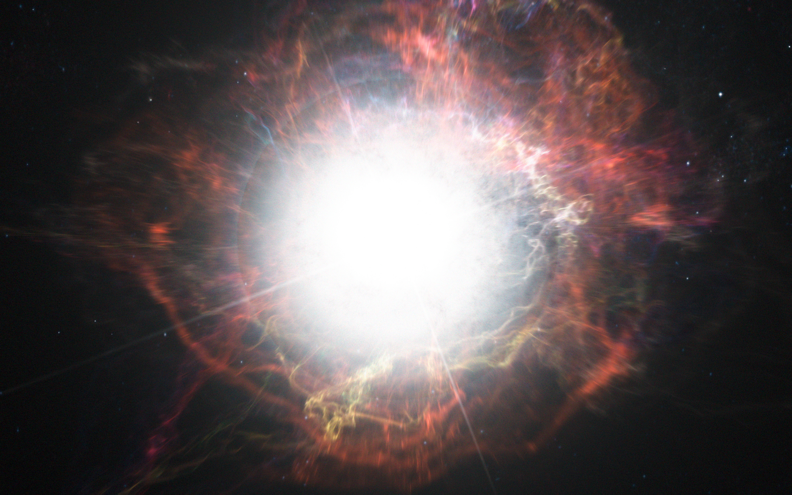
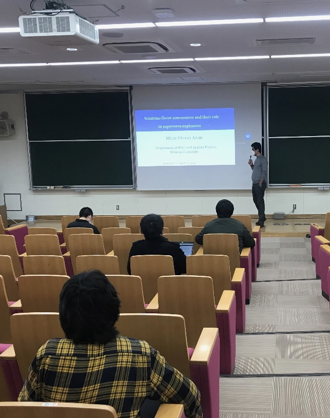
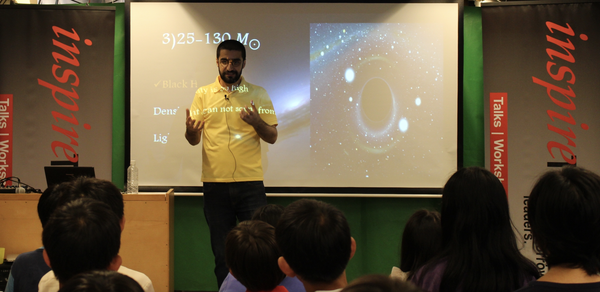

About me
Position
Assistant Professor
Affiliation
Temple University, Japan Campus
Education
PhD, Waseda University, Tokyo, Japan
Research Interests
Neutrino Astrophysics
Core-Collapse Supernovae and Compact Binary Coalescence
High Energy Astrophysical Objects
Research History
Assistant Professor, Waseda University, Tokyo, Japan
Postdoctoral Researcher, Waseda University, Tokyo, Japan
Professional Memberships
The Physical Society of Japan
The Astronomical Society of Japan
Academic Honors
MEXT Scholarship, awarded by the Ministry of Education, Culture, Sports, Science and Technology (MEXT), Government of Japan
Other Interests
History and Philosophy
Email
milad.delfan.azari_at_tuj.temple.edu (replace _at_ with @)
milad_at_heap.phys.waseda.ac.jp (replace _at_ with @)
Google Profile
Google Scholar
Research

In my research, I investigate the physics of collective neutrino oscillations in core-collapse supernovae. A core-collapse supernova occurs when the stellar mass exceeds 8 times that of the sun (Mstar≿8 M⊙). Core-collapse supernovae are among the most violent explosions in the universe. Although extensive and intensive studies over the decades have helped to resolve some aspects of this important puzzle, we cannot claim to have uncovered everything. Despite our best efforts, we still do not have a full understanding of the internal structure of the supernova progenitors, the mechanism of the explosion, and the scenario of the formation of compact objects such as black holes and neutron stars that are formed after the explosion.
The supernova explosion occurs in an extremely dense and extremely hot medium, therefore an extended understanding of physics in different areas is needed, such as Particle Physics, Nuclear Physics, Gravitation, Statistical Physics, etc. It is possible that some systems follow different physical laws from the ones that govern our planet, and gaining an understanding of them might allow us to discover a new type of physics.
According to current theories, neutrinos are the key players in the explosion mechanism of core-collapse supernovae. It is known that they are highly populated deep inside the massive star cores and that most of the energy released after gravitational collapse is carried by them. A phenomenon known as fast-pairwise collective neutrino oscillations may occur inside the core as a result of mutual forward scattering that may cause neutrinos to change their flavors inside the core. Supernova explosion dynamics may be influenced if the neutrino flavor is converted fast near the neutrino sphere.
My research focuses on investigating the internal structure and explosion mechanism of core-collapse supernovae by studying neutrinos and investigating the possibility of collective neutrino oscillations. To learn more about what I do, please read my published papers, which are listed in the publications section of this website.
Publications

Systematic Local Simulations of Fast Neutrino Flavor Conversions with Scattering Effects
Milad Delfan Azari, Hirokazu Sasaki, Tomoya Takiwaki and Hirotada Okawa
Progress of Theoretical and Experimental Physics 2024, 103E01
Nonlinear evolution of fast collective neutrino oscillations in core-collapse supernovae
Milad Delfan Azari, Hirokazu Sasaki, Tomoya Takiwaki and Hirotada Okawa
Communications in Physics, Vol. 32, No. 4S
Fast collective neutrino oscillations inside the neutrino sphere in core-collapse supernovae
Milad Delfan Azari, Shoichi Yamada, Taiki Morinaga, Hiroki Nagakura, Shun Furusawa, Akira Harada, Hirotada Okawa, Wakana Iwakami and Kohsuke Sumiyoshi
Physical Review D 101, 023018
Investigations of Fast-Pairwise Collective Neutrino Oscillations in Core-Collapse Supernovae based on the Results of Boltzmann Simulations
Milad Delfan Azari, Shoichi Yamada, Taiki Morinaga, Wakana Iwakami, Hirotada Okawa, Hiroki Nagakura and Kohsuke Sumiyoshi
JPS Conf. Proc. 31, 011068, 023018
Linear analysis of fast-pairwise collective neutrino oscillations in core-collapse supernovae based on the results of Boltzmann simulations
Milad Delfan Azari, Shoichi Yamada, Taiki Morinaga, Wakana Iwakami, Hirotada Okawa, Hiroki Nagakura and Kohsuke Sumiyoshi
Physical Review D 99, 103011
Pre-Supernova neutrino emission from ONe cores in the progenitors of Core-Collapse Supernovae: Are they distinguishable from those of Fe cores?
Chinami Kato, Milad Delfan Azari, Shoichi Yamada, Koh Takahashi, Hideyuki Umeda, Takashi Yoshida and Koji Ishidoshiro
The Astrophysical Journal, Volume 808, Number 2
Presentations

On the evolution of fast flavor neutrino conversions in core-collapse supernovae
November 10, 2023. Invited Speaker at "Theoretical particle physics and cosmology group, Hokkaido University, Japan"
Core-collapse supernovae neutrinos:~Effect of energy-dependent scattering on fast collective neutrino oscillations
September 20-22, 2023. Talk at "2023 Autumn Annual Meeting, The Astronomical Society of Japan, Nagoya University, Nagoya, Japan"
Investigation of the effects of energy-dependent scattering on the fast flavor neutrino conversions in core-collapse supernovae
September 16-19, 2023. Talk at "2023 Autumn Annual Meeting, The Physical Society of Japan, Tohoku University, Sendai, Japan"
Evolution of fast neutrino flavor conversions with scattering effects in core-collapse supernovae
March 13-16, 2023. Talk at "2023 Spring Annual Meeting, The Astronomical Society of Japan, Rikkyo University, Tokyo, Japan"
Nonlinear evolution of fast collective neutrino oscillations in core-collapse supernovae
October 25-28, 2022. Talk (Online) at "The 16th International Symposium on Origin of Matter and Evolution of Galaxies (OMEG16), Institute of Physics, Vietnam Academy of Science and Technology, Hanoi, Vietnam"
Neutrino flavor conversions and their role in supernova explosions
March 11, 2022. Invited speaker at "Yukawa Institute for Theoretical Physics, Kyoto University, Kyoto, Japan"
Physics of fast collective neutrino oscillations in core-collapse supernovae
June 29, 2021. Invited speaker (Online) at "High Energy Accelerator Research Organization (KEK) Theory Center, Tsukuba, Japan"
Fast collective neutrino oscillations in core-collapse supernovae and neutron star mergers
March 16-19, 2021. Talk (Online) at "2021 Spring Annual Meeting, Astronomical Society of Japan"
Occurrence of fast collective neutrino oscillations in neutron star mergers and core-collapse supernovae
March 12-15, 2021. Talk (Online) at "2021 Spring Annual Meeting, The Physical Society of Japan"
Occurrence of fast collective neutrino oscillations inside the neutrino sphere in core-collapse supernovae
February 26-28, 2020. Poster at "The Evolution of Massive Stars and Formation of Compact Stars: from the cradle to the grave, Waseda University, Tokyo, Japan"
Fast neutrino flavor conversions inside the neutrino sphere in the core-collapse supernovae
October 21-24, 2019. Talk at "Multi-dimensional Modeling and Multi-Messenger observation from Core-Collapse Supernovae (4M-COCOS), Fukuoka University, Fukuoka, Japan"
The possibility of the fast-pairwise collective neutrino oscillation occurrence in core-collapse supernovae
September 17-20, 2019. Talk at "2019 Autumn Annual Meeting, The Physical Society of Japan, Yamagata University, Yamagata, Japan"
Occurrence of fast-pairwise collective neutrino oscillations and their role in the explosion mechanism of core-collapse supernovae
September 11 - 13, 2019. Talk at "2019 Autumn Annual Meeting, Astronomical Society of Japan, Kumamoto University, Kumamoto, Japan"
Investigations of Fast-Pairwise Collective Neutrino Oscillations in Core-Collapse Supernovae based on the results of the Boltzmann simulations
July 2-5, 2019. Poster at "15th International Symposium on Origin of Matter and Evolution of Galaxies (OMEG15), Yukawa Institute for Theoretical Physics, Kyoto University, Kyoto, Japan"
Linear Analysis of Fast-Pairwise Collective Neutrino Oscillations in CCSNe based on the results of the realistic Boltzmann simulations
March 19-20, 2019. Talk at "RIKEN - RESCEU Joint Seminar 2019, The University of Tokyo, Tokyo, Japan"
Linear Analysis of Fast-Pairwise Neutrino flavor conversion in CCSNe based on the results of the realistic Boltzmann-Neutrino-Radiation-Hydrodynamics code
March 7-9, 2019. Poster at "International symposium on Revealing the history of the universe with underground particle and nuclear research 2019, Tohoku University, Sendai, Japan"
Linear Analysis of Fast-Pairwise Neutrino flavor conversion in CCSNe based on the results of the realistic Boltzmann-Neutrino-Radiation-Hydrodynamics code
January 21-23, 2019. Talk at "10th DTA Symposium, Stellar Death and their diversity, National Astronomical Observatory of Japan, Mitaka, Tokyo, Japan"
Linear Analysis of Fast-Pairwise Neutrino flavor conversion in CCSNe based on realistic data
December 19-21, 2019. Talk at "31st Symposium of The Association of the Theoretical Astrophysicists of Japan (Rironkon), Yukawa Institute for Theoretical Physics, Kyoto University, Kyoto, Japan"
Linear Analysis of Fast Pairwise Collective Neutrino Oscillations in CCSNe based on the results of realistic simulations with Boltzmann solver
October 8-10, 2018. Poster at "International Conference on Deciphering multi-Dimensional nature of core-collapse Supernovae via Gravitational-Wave and neutrino signatures (SNeGWv2018), Toyama, Japan"
Linear Analysis of Fast Pairwise Neutrino Oscillations in CCSNe by Boltzmann-Hydro Code
March 19-21, 2018. Poster at "International Conference on Physics of Core-Collapse Supernovae and Compact Star Formations, Waseda University, Tokyo, Japan"
Neutrino Oscillations in Core-Collapse Supernova
July 27-30, 2015. Poster at "Summer school of the Astronomical Society of Japan, Nagano, Japan"
Outreach

Introduction to Astronomy
How the stars are formed?
February 1, 2021. Online lecture. Thomas Deacon Academy, Peterborough,England, United Kingdom
The Life of a Star
What is the fate of our solar system?
May 26, 2018. Inspire Tokyo, Tokyo, Japan
The Story of Physics
What are the origins of our knowledge?
February 24, 2018. Inspire Tokyo, Tokyo, Japan
contact
Email: milad_at_heap.phys.waseda.ac.jp (replace _at_ to @)